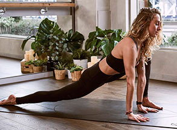
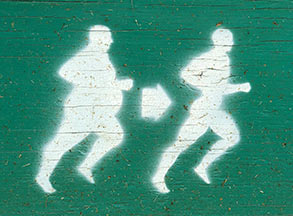
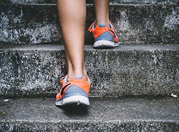

Страница категории Кардио в блоге сайта спортклуба SportIsland
{%
set links = [
{ url:'blog.html', text: 'Блог'},
{
url: 'category.html',
text: 'Кардио'
}
]
%}
{% include '_breadcrumbs.html' %}
кардио
-
 Растяжка от болей в мышцах
Сайт рыбатекст поможет дизайнеру, верстальщику, вебмастеру сгенерировать несколько абзацев более менее осмысленного текста рыбы на русском языке, а начинающему оратору отточить навык публичных выступлений в домашних условиях.
Подробнее -
 Бег помогает похудеть
Сайт рыбатекст поможет дизайнеру, верстальщику, вебмастеру сгенерировать несколько абзацев более менее осмысленного текста рыбы на русском языке, а начинающему оратору отточить навык публичных выступлений в домашних условиях.
Подробнее -
 Рельефный пресс
Сайт рыбатекст поможет дизайнеру, верстальщику, вебмастеру сгенерировать несколько абзацев более менее осмысленного текста рыбы на русском языке, а начинающему оратору отточить навык публичных выступлений в домашних условиях.
Подробнее